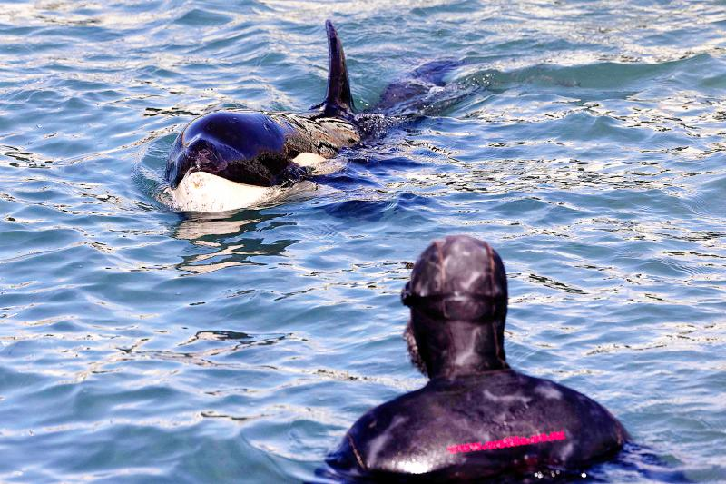
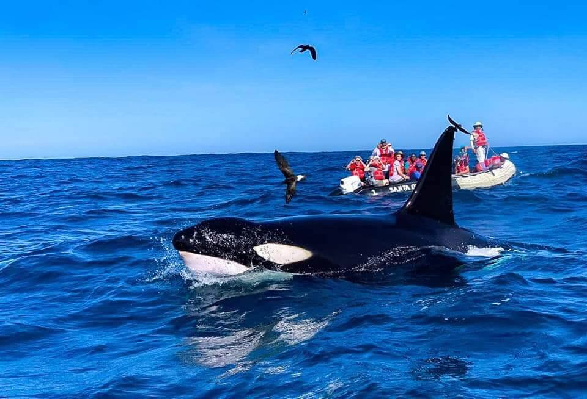
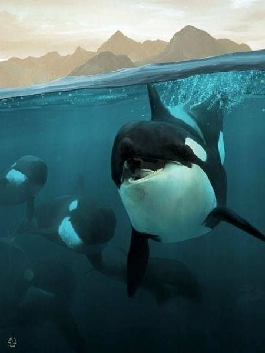
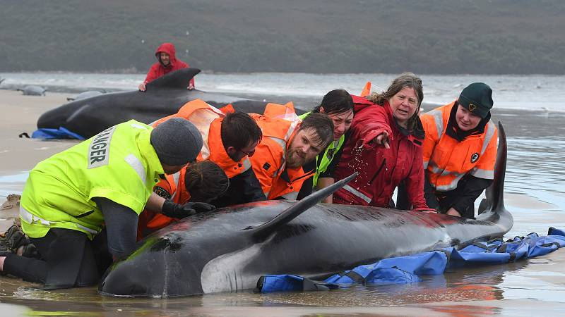
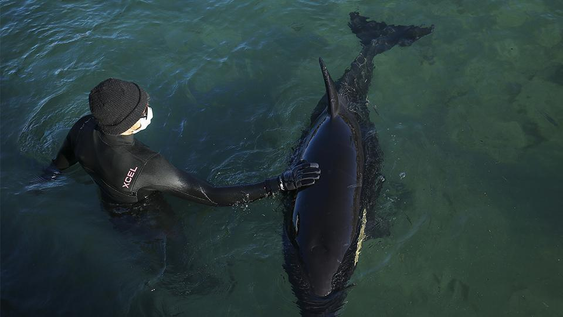
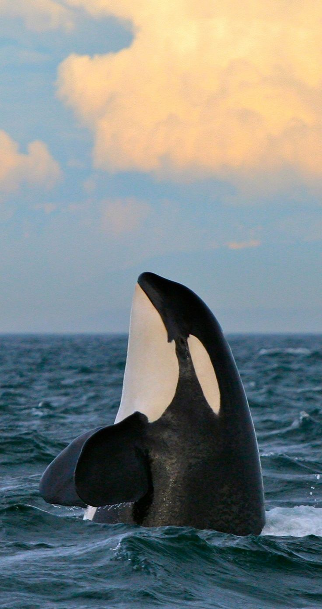
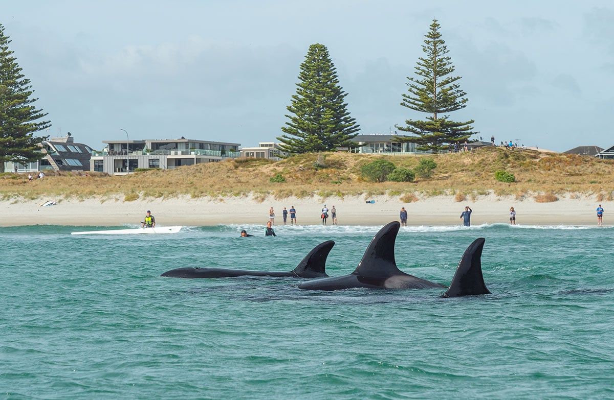
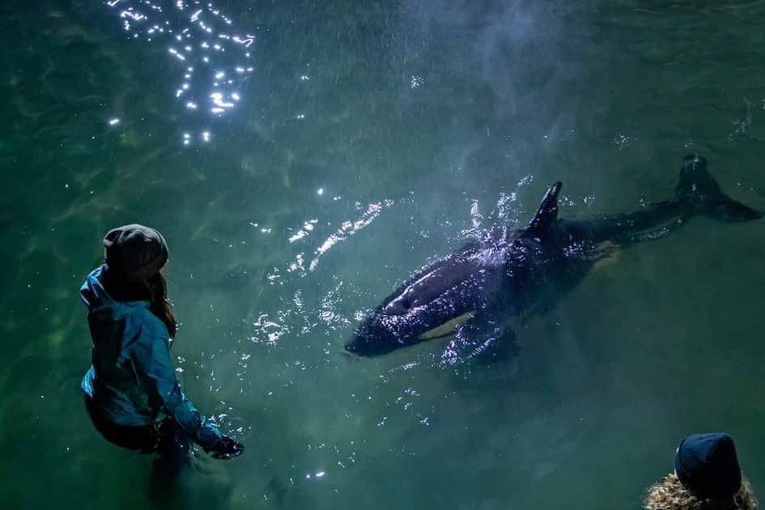
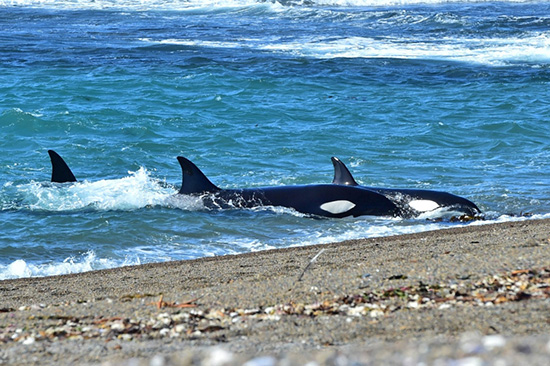

Acerca de Orka
Bienvenidos a Orka, el sitio web donde podrás encontrar información relevante sobre el depredador más temido del oceano. Nuestro objetivo es enseñar acerca del origen y comportamiento de este impresionante mamífero, mal llamado "ballena asesina". Es posible apoyar la conservación de estos célebres animales con simples acciones: cuidar los ecosistemas, apoyar a las organizaciones y todo esfuerzo de conservación y por supuesto, pasar de la teoría a la acción. Para más información sobre cómo ayudar a las orcas, visita Orca Conservacy.








